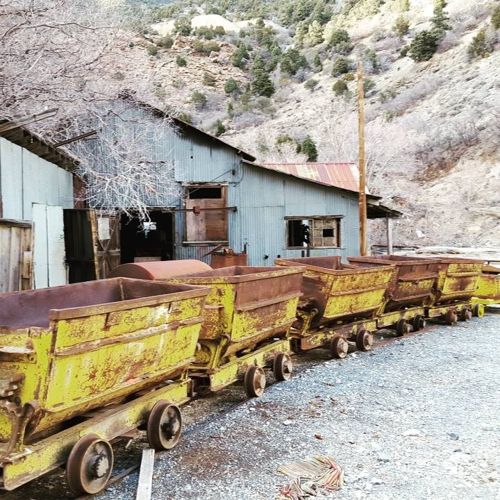
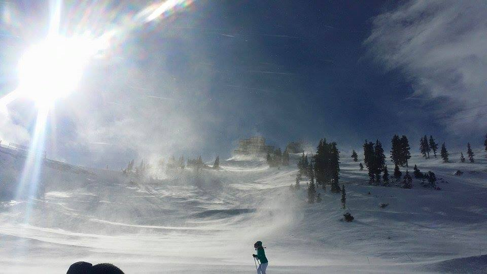
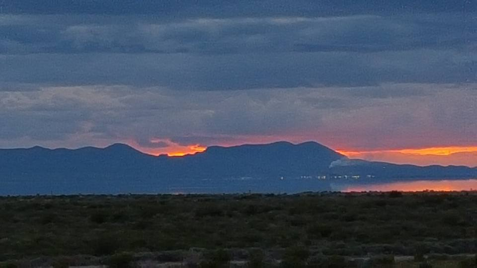

How You Can Help!
The Protect Our Mountains campaign is always looking for dedicated volunteers to help with a large variety of commitments. Each of us can find our own way to help, depending on our means and ability. Here are a few of the different kinds of volunteer opportunities that we urge you to get involved in.
Trail Crew and Watershed Clean-Up

Years of industrial activity in our canyons (mining, development, occult rituals, illegal genetic experiments) have created hazards for hikers and have polluted the water table. If you are a strong hiker and want an exciting volunteer opportunity, you should join our POM Trail Crew! You'll get experience dealing with unexploded ordinances, disassembling mining equipment and battling mutated creatures. Exploring the beautiful valleys, streams, caves and lairs will expose you to wondrous sights (and a perfectly managable amount of radiation).
Fundraising

The people most dedicated to spoiling our mountains are incredibly wealthy. Ski tickets are so expensive that many Utah families have to choose between owning furniture or purchasing a season lift pass. Subsequently, about 60 percent of Utah households choose to sleep on the floor. At Protect Our Mountains, 63.2% of our fundraising is used to lobby our local government boards to limit the amount of Texans and Floridians allowed into the state.
Sacrifices to Cthulhu

One Wasatch, the zoning proposition by Vale Mountain Group, will surely be thwarted if the Dark God Cthulhu ceases to dream and rises up from his watery slumber. But who is responsible for ending his millenial Fhtagn? You are!